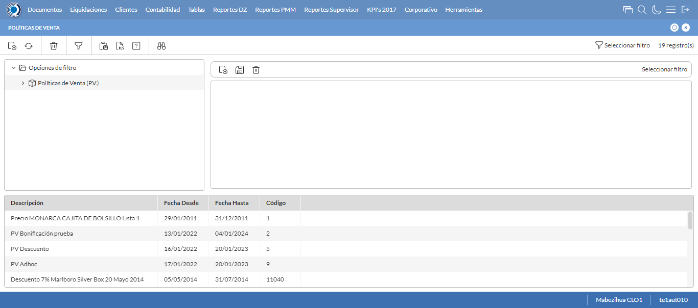
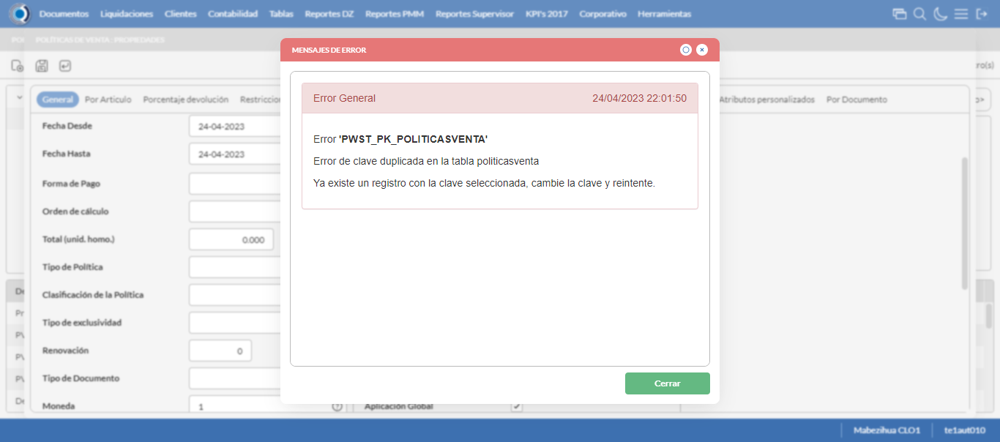

Desarrollado por : Area de Testing PWST
Fecha y hora de inicio : 2023-04-24 16:00:01
Duracion : 0:02:25.530745
Resultado : Total 8，Correctos 5 ，Errores 3 ，Taza de resultado 62.50%
Resumen 62.50% Errores 3 Fallidos 0 Correctos 5 Test realizados 8
| Caso de Prueba | Total | Correctos | Fallido | Error | Detalles | Captura del error |
| PoliticasVenta5.Test: Escenario 1 de Autorizaciones de Credito | 8 | 5 | 0 | 3 | Detalles | |
test |
ft1_1: 2023-04-24 16:00:03,094 - root - INFO - Se abre el chrome
2023-04-24 16:00:04,121 - root - INFO - Entra a la URL
2023-04-24 16:00:04,385 - root - INFO - Maximiza la pantalla
Traceback (most recent call last):
File "C:\Users\gerar\AppData\Local\Programs\Python\Python311\Lib\site-packages\selenium\webdriver\remote\switch_to.py", line 88, in frame
frame_reference = self._driver.find_element(By.ID, frame_reference)
^^^^^^^^^^^^^^^^^^^^^^^^^^^^^^^^^^^^^^^^^^^^^^^^^
File "C:\Users\gerar\AppData\Local\Programs\Python\Python311\Lib\site-packages\selenium\webdriver\remote\webdriver.py", line 861, in find_element
return self.execute(Command.FIND_ELEMENT, {"using": by, "value": value})["value"]
^^^^^^^^^^^^^^^^^^^^^^^^^^^^^^^^^^^^^^^^^^^^^^^^^^^^^^^^^^^^^^^^^
File "C:\Users\gerar\AppData\Local\Programs\Python\Python311\Lib\site-packages\selenium\webdriver\remote\webdriver.py", line 444, in execute
self.error_handler.check_response(response)
File "C:\Users\gerar\AppData\Local\Programs\Python\Python311\Lib\site-packages\selenium\webdriver\remote\errorhandler.py", line 249, in check_response
raise exception_class(message, screen, stacktrace)
selenium.common.exceptions.NoSuchElementException: Message: no such element: Unable to locate element: {"method":"css selector","selector":"[id="mainFrame"]"}
(Session info: chrome=112.0.5615.138)
Stacktrace:
Backtrace:
GetHandleVerifier [0x00FDDCE3+50899]
(No symbol) [0x00F6E111]
(No symbol) [0x00E75588]
(No symbol) [0x00EA08F9]
(No symbol) [0x00EA0AFB]
(No symbol) [0x00ECF902]
(No symbol) [0x00EBB944]
(No symbol) [0x00ECE01C]
(No symbol) [0x00EBB6F6]
(No symbol) [0x00E97708]
(No symbol) [0x00E9886D]
GetHandleVerifier [0x01243EAE+2566302]
GetHandleVerifier [0x012792B1+2784417]
GetHandleVerifier [0x0127327C+2759788]
GetHandleVerifier [0x01075740+672048]
(No symbol) [0x00F78872]
(No symbol) [0x00F741C8]
(No symbol) [0x00F742AB]
(No symbol) [0x00F671B7]
BaseThreadInitThunk [0x76047D49+25]
RtlInitializeExceptionChain [0x772CB74B+107]
RtlClearBits [0x772CB6CF+191]
During handling of the above exception, another exception occurred:
Traceback (most recent call last):
File "C:\Users\gerar\AppData\Local\Programs\Python\Python311\Lib\site-packages\selenium\webdriver\remote\switch_to.py", line 91, in frame
frame_reference = self._driver.find_element(By.NAME, frame_reference)
^^^^^^^^^^^^^^^^^^^^^^^^^^^^^^^^^^^^^^^^^^^^^^^^^^^
File "C:\Users\gerar\AppData\Local\Programs\Python\Python311\Lib\site-packages\selenium\webdriver\remote\webdriver.py", line 861, in find_element
return self.execute(Command.FIND_ELEMENT, {"using": by, "value": value})["value"]
^^^^^^^^^^^^^^^^^^^^^^^^^^^^^^^^^^^^^^^^^^^^^^^^^^^^^^^^^^^^^^^^^
File "C:\Users\gerar\AppData\Local\Programs\Python\Python311\Lib\site-packages\selenium\webdriver\remote\webdriver.py", line 444, in execute
self.error_handler.check_response(response)
File "C:\Users\gerar\AppData\Local\Programs\Python\Python311\Lib\site-packages\selenium\webdriver\remote\errorhandler.py", line 249, in check_response
raise exception_class(message, screen, stacktrace)
selenium.common.exceptions.NoSuchElementException: Message: no such element: Unable to locate element: {"method":"css selector","selector":"[name="mainFrame"]"}
(Session info: chrome=112.0.5615.138)
Stacktrace:
Backtrace:
GetHandleVerifier [0x00FDDCE3+50899]
(No symbol) [0x00F6E111]
(No symbol) [0x00E75588]
(No symbol) [0x00EA08F9]
(No symbol) [0x00EA0AFB]
(No symbol) [0x00ECF902]
(No symbol) [0x00EBB944]
(No symbol) [0x00ECE01C]
(No symbol) [0x00EBB6F6]
(No symbol) [0x00E97708]
(No symbol) [0x00E9886D]
GetHandleVerifier [0x01243EAE+2566302]
GetHandleVerifier [0x012792B1+2784417]
GetHandleVerifier [0x0127327C+2759788]
GetHandleVerifier [0x01075740+672048]
(No symbol) [0x00F78872]
(No symbol) [0x00F741C8]
(No symbol) [0x00F742AB]
(No symbol) [0x00F671B7]
BaseThreadInitThunk [0x76047D49+25]
RtlInitializeExceptionChain [0x772CB74B+107]
RtlClearBits [0x772CB6CF+191]
During handling of the above exception, another exception occurred:
Traceback (most recent call last):
File "C:\xampp\htdocs\versiones\automatizaciones\AutoPWST\05PV\testCase\PoliticasVenta5.py", line 32, in test
self.driver.switch_to.frame("mainFrame")
File "C:\Users\gerar\AppData\Local\Programs\Python\Python311\Lib\site-packages\selenium\webdriver\remote\switch_to.py", line 93, in frame
raise NoSuchFrameException(frame_reference)
selenium.common.exceptions.NoSuchFrameException: Message: mainFrame
|
|
||||
test_000: Ingresa a la base de datos |
pt1_2: 2023-04-24 16:00:07,498 - root - INFO - Escribe el usuario
2023-04-24 16:00:07,609 - root - INFO - Escribe la contraseña
2023-04-24 16:00:07,696 - root - INFO - Se dio clic en el boton ingresar
2023-04-24 16:00:08,904 - root - INFO - Ejecutar Enterprise
2023-04-24 16:00:13,081 - root - INFO - Cambia entre pestañas
|
|
||||
test_001: Abre menu y ejecuta pantalla |
pt1_3: 2023-04-24 16:01:26,347 - root - INFO - Se ingreso a la pantalla mediante el buscador porque fallo el ingreso por menus
2023-04-24 16:01:26,355 - root - INFO - La función buscador funciona de manera correcta.
2023-04-24 16:01:28,504 - root - INFO - La pantalla ejecutada es Politicas de Venta
2023-04-24 16:01:28,505 - root - INFO - Captura: C:\xampp\htdocs\versiones\automatizaciones\AutoPWST\05PV\report\img screen：20230424_16_01_28.png
2023-04-24 16:01:38,971 - root - INFO - Se presiona el boton 'Nuevo', para crear un nuevo registro.
|
 | ||||
test_002: Abre la ventana de nuevo y crear un registro |
pt1_4: 2023-04-24 16:01:40,048 - root - INFO - Se abrio la pantalla para el ingreso de un registro nuevo.
2023-04-24 16:01:40,084 - root - INFO - El campo 'Codigo' si se encuentra visible.
2023-04-24 16:01:40,119 - root - INFO - El campo 'Codigo Alternativo' si se encuentra visible.
2023-04-24 16:01:40,155 - root - INFO - El campo 'Descrición' si se encuentra visible.
2023-04-24 16:01:40,191 - root - INFO - El campo 'Moneda' si se encuentra visible.
2023-04-24 16:01:40,229 - root - INFO - El campo 'Aplicable en' si se encuentra visible.
2023-04-24 16:01:40,306 - root - INFO - El campo 'Activa' si se encuentra visible.
2023-04-24 16:01:40,342 - root - INFO - El campo 'Aplicación Global' si se encuentra visible.
2023-04-24 16:01:40,409 - root - INFO - Ingresa el codigo del nuevo registro
2023-04-24 16:01:40,503 - root - INFO - Ingresa el codigo alternativo del nuevo registro
2023-04-24 16:01:40,683 - root - INFO - Ingresa la descripción del nuevo registro
2023-04-24 16:01:41,659 - root - INFO - Se dió doble click en el registro de Moneda.
2023-04-24 16:01:42,210 - root - INFO - Se dió click en la opción BackOffice y Mobile.
2023-04-24 16:01:42,305 - root - INFO - Se dió click en el checkbox Activa.
2023-04-24 16:01:42,372 - root - INFO - Se dió click en el checkbox Aplicación Global.
2023-04-24 16:01:42,436 - root - INFO - Se hace el cambio a la pestaña Por Articulo para continuar con el registro nuevo
2023-04-24 16:01:43,020 - root - INFO - Se presiona el boton 'Nuevo', para crear un nuevo registro de Por Articulo.
2023-04-24 16:01:44,118 - root - INFO - El campo 'Artículo' si se encuentra visible.
2023-04-24 16:01:44,153 - root - INFO - El campo 'Porcentaje de Descuento' si se encuentra visible.
2023-04-24 16:01:44,193 - root - INFO - El campo 'Tope Descuento 1' si se encuentra visible.
2023-04-24 16:01:44,240 - root - INFO - El campo 'Tope Descuento 2' si se encuentra visible.
2023-04-24 16:01:44,356 - root - INFO - Ingresa el Articulo del nuevo registro
2023-04-24 16:01:44,456 - root - INFO - Ingresa el Porcentaje de Descuento del nuevo registro
2023-04-24 16:01:44,554 - root - INFO - Ingresa el Tope Descuento 1 del nuevo registro
2023-04-24 16:01:44,699 - root - INFO - Ingresa el Tope Descuento 2 del nuevo registro
2023-04-24 16:01:44,783 - root - INFO - Se presiona el boton 'Guardar', para guardar el registro de Por Articulo.
2023-04-24 16:01:45,089 - root - INFO - Se da clic en el boton Guardar; se debe crear un nuevo registro.
|
|
||||
test_003: Repetir el registro creado anteriormente |
pt1_5: 2023-04-24 16:01:45,919 - root - INFO - Se presiona el boton 'Refrescar', para crear un nuevo registro igual al anterior.
2023-04-24 16:01:46,114 - root - INFO - Se presiona el boton 'Nuevo', para crear un nuevo registro igual al anterior.
2023-04-24 16:01:47,197 - root - INFO - Se abrio la pantalla para el ingreso de un registro nuevo.
2023-04-24 16:01:47,290 - root - INFO - Ingresa el codigo del nuevo registro
2023-04-24 16:01:47,454 - root - INFO - Ingresa el codigo alternativo del nuevo registro
2023-04-24 16:01:47,604 - root - INFO - Ingresa la descripción del nuevo registro
2023-04-24 16:01:48,545 - root - INFO - Se dió doble click en el registro de Moneda.
2023-04-24 16:01:49,171 - root - INFO - Se dió click en la opción BackOffice y Mobile.
2023-04-24 16:01:49,253 - root - INFO - Se dió click en el checkbox Activa.
2023-04-24 16:01:49,340 - root - INFO - Se dió click en el checkbox Aplicación Global.
2023-04-24 16:01:49,417 - root - INFO - Se da clic en el boton Guardar; NO se debe crear un nuevo registro.
2023-04-24 16:01:50,420 - root - INFO - Captura: C:\xampp\htdocs\versiones\automatizaciones\AutoPWST\05PV\report\img screen：20230424_16_01_50.png
2023-04-24 16:01:55,776 - root - INFO - Se presiona el boton 'Cerrar', para cerrar el mensaje de duplicidad de llave primaria
2023-04-24 16:01:56,776 - root - INFO - Captura: C:\xampp\htdocs\versiones\automatizaciones\AutoPWST\05PV\report\img screen：20230424_16_01_56.png
2023-04-24 16:01:56,972 - root - INFO - Se presiona el boton 'Cerrar', para cerrar el mensaje de duplicidad de llave primaria
2023-04-24 16:01:57,057 - root - INFO - Se presiona el boton 'Cerrar', para cerrar la ventana
|
 | ||||
test_004: Modificar el registro |
pt1_6: 2023-04-24 16:01:57,173 - root - INFO - Se presiona el boton 'Refrescar', para proceder a modificar el registro.
2023-04-24 16:01:58,801 - root - INFO - Se da clic en el registro creado, para proceder a modificarlo.
2023-04-24 16:02:00,457 - root - INFO - Se modifica el contenido del campo Codigo Alternativo
2023-04-24 16:02:00,651 - root - INFO - Se modifica el contenido del campo Descripcion
2023-04-24 16:02:00,730 - root - INFO - Se dió click en el checkbox Aplicación Global.
2023-04-24 16:02:00,789 - root - INFO - Se hace el cambio a la pestaña Por Articulo para continuar con la modificación del registro
2023-04-24 16:02:01,906 - root - INFO - Se da clic en el registro de Por Articulo, para proceder a modificarlo.
2023-04-24 16:02:03,152 - root - INFO - Se modifica el contenido del campo Articulo
2023-04-24 16:02:03,277 - root - INFO - Se modifica el contenido del campo Porcentaje de Descuento
2023-04-24 16:02:03,356 - root - INFO - Se presiona el boton 'Guardar', para guardar la modificación del registro de Por Articulo.
2023-04-24 16:02:03,645 - root - INFO - Se da clic en el boton Guardar; se debe modificar la informacion del registro.
|
|
||||
test_005: Eliminar el registro creado |
ft1_7: 2023-04-24 16:02:04,508 - root - INFO - Se presiona el boton 'Refrescar', para proceder a eliminar el registro.
2023-04-24 16:02:06,108 - root - INFO - Se da clic en el registro creado, para proceder a eliminarlo.
2023-04-24 16:02:07,197 - root - INFO - Se hace el cambio a la pestaña Por Articulo para continuar con la eliminación del registro
2023-04-24 16:02:26,602 - root - ERROR - No se encontró el registro de Por Articulo, validar que la acción anterior haya finalizado, que el xpath sea el correcto o que la página no presente lentitud
2023-04-24 16:02:26,603 - root - INFO - Captura: C:\xampp\htdocs\versiones\automatizaciones\AutoPWST\05PV\report\img screen：20230424_16_02_26.png
Traceback (most recent call last):
File "C:\xampp\htdocs\versiones\automatizaciones\AutoPWST\05PV\testCase\eliminarregistro.py", line 69, in eliminarregistro
Registroporarticulo = self.wait.until(conditions.visibility((By.XPATH, "//span[text()='MARLBORO GOLD KS BOX 14 (FA01005)']")))
^^^^^^^^^^^^^^^^^^^^^^^^^^^^^^^^^^^^^^^^^^^^^^^^^^^^^^^^^^^^^^^^^^^^^^^^^^^^^^^^^^^^^^^^^^^^^^^^^^^^^^^^
File "C:\Users\gerar\AppData\Local\Programs\Python\Python311\Lib\site-packages\selenium\webdriver\support\wait.py", line 86, in until
value = method(self._driver)
^^^^^^^^^^^^^^^^^^^^
File "C:\Users\gerar\AppData\Local\Programs\Python\Python311\Lib\site-packages\selenium\webdriver\support\expected_conditions.py", line 125, in _predicate
return _element_if_visible(driver.find_element(*locator))
^^^^^^^^^^^^^^^^^^^^^^^^^^^^^
File "C:\Users\gerar\AppData\Local\Programs\Python\Python311\Lib\site-packages\selenium\webdriver\remote\webdriver.py", line 861, in find_element
return self.execute(Command.FIND_ELEMENT, {"using": by, "value": value})["value"]
^^^^^^^^^^^^^^^^^^^^^^^^^^^^^^^^^^^^^^^^^^^^^^^^^^^^^^^^^^^^^^^^^
File "C:\Users\gerar\AppData\Local\Programs\Python\Python311\Lib\site-packages\selenium\webdriver\remote\webdriver.py", line 444, in execute
self.error_handler.check_response(response)
File "C:\Users\gerar\AppData\Local\Programs\Python\Python311\Lib\site-packages\selenium\webdriver\remote\errorhandler.py", line 249, in check_response
raise exception_class(message, screen, stacktrace)
selenium.common.exceptions.NoSuchWindowException: Message: no such window: target window already closed
from unknown error: web view not found
(Session info: chrome=112.0.5615.138)
Stacktrace:
Backtrace:
GetHandleVerifier [0x00FDDCE3+50899]
(No symbol) [0x00F6E111]
(No symbol) [0x00E75588]
(No symbol) [0x00E5D333]
(No symbol) [0x00EBF4DB]
(No symbol) [0x00ECDB33]
(No symbol) [0x00EBB6F6]
(No symbol) [0x00E97708]
(No symbol) [0x00E9886D]
GetHandleVerifier [0x01243EAE+2566302]
GetHandleVerifier [0x012792B1+2784417]
GetHandleVerifier [0x0127327C+2759788]
GetHandleVerifier [0x01075740+672048]
(No symbol) [0x00F78872]
(No symbol) [0x00F741C8]
(No symbol) [0x00F742AB]
(No symbol) [0x00F671B7]
BaseThreadInitThunk [0x76047D49+25]
RtlInitializeExceptionChain [0x772CB74B+107]
RtlClearBits [0x772CB6CF+191]
During handling of the above exception, another exception occurred:
Traceback (most recent call last):
File "C:\xampp\htdocs\versiones\automatizaciones\AutoPWST\05PV\testCase\PoliticasVenta5.py", line 134, in test_005
success = eliminarregistro.eliminarregistro.eliminarregistro(self, conditions, Configuracion)
^^^^^^^^^^^^^^^^^^^^^^^^^^^^^^^^^^^^^^^^^^^^^^^^^^^^^^^^^^^^^^^^^^^^^^^^^^^^^^^^^^^
File "C:\xampp\htdocs\versiones\automatizaciones\AutoPWST\05PV\testCase\eliminarregistro.py", line 87, in eliminarregistro
self.driver.get_screenshot_as_file(img_name)
File "C:\Users\gerar\AppData\Local\Programs\Python\Python311\Lib\site-packages\selenium\webdriver\remote\webdriver.py", line 929, in get_screenshot_as_file
png = self.get_screenshot_as_png()
^^^^^^^^^^^^^^^^^^^^^^^^^^^^
File "C:\Users\gerar\AppData\Local\Programs\Python\Python311\Lib\site-packages\selenium\webdriver\remote\webdriver.py", line 965, in get_screenshot_as_png
return b64decode(self.get_screenshot_as_base64().encode("ascii"))
^^^^^^^^^^^^^^^^^^^^^^^^^^^^^^^
File "C:\Users\gerar\AppData\Local\Programs\Python\Python311\Lib\site-packages\selenium\webdriver\remote\webdriver.py", line 977, in get_screenshot_as_base64
return self.execute(Command.SCREENSHOT)["value"]
^^^^^^^^^^^^^^^^^^^^^^^^^^^^^^^^
File "C:\Users\gerar\AppData\Local\Programs\Python\Python311\Lib\site-packages\selenium\webdriver\remote\webdriver.py", line 444, in execute
self.error_handler.check_response(response)
File "C:\Users\gerar\AppData\Local\Programs\Python\Python311\Lib\site-packages\selenium\webdriver\remote\errorhandler.py", line 249, in check_response
raise exception_class(message, screen, stacktrace)
selenium.common.exceptions.NoSuchWindowException: Message: no such window: target window already closed
from unknown error: web view not found
(Session info: chrome=112.0.5615.138)
Stacktrace:
Backtrace:
GetHandleVerifier [0x00FDDCE3+50899]
(No symbol) [0x00F6E111]
(No symbol) [0x00E75588]
(No symbol) [0x00E5D333]
(No symbol) [0x00EBF4DB]
(No symbol) [0x00ECDB33]
(No symbol) [0x00EBB6F6]
(No symbol) [0x00E97708]
(No symbol) [0x00E9886D]
GetHandleVerifier [0x01243EAE+2566302]
GetHandleVerifier [0x012792B1+2784417]
GetHandleVerifier [0x0127327C+2759788]
GetHandleVerifier [0x01075740+672048]
(No symbol) [0x00F78872]
(No symbol) [0x00F741C8]
(No symbol) [0x00F742AB]
(No symbol) [0x00F671B7]
BaseThreadInitThunk [0x76047D49+25]
RtlInitializeExceptionChain [0x772CB74B+107]
RtlClearBits [0x772CB6CF+191]
|

|
||||
test_006: Cerrar_Navegador |
ft1_8: Traceback (most recent call last):
File "C:\xampp\htdocs\versiones\automatizaciones\AutoPWST\05PV\testCase\PoliticasVenta5.py", line 152, in test_006
self.driver.close()
File "C:\Users\gerar\AppData\Local\Programs\Python\Python311\Lib\site-packages\selenium\webdriver\remote\webdriver.py", line 561, in close
self.execute(Command.CLOSE)
File "C:\Users\gerar\AppData\Local\Programs\Python\Python311\Lib\site-packages\selenium\webdriver\remote\webdriver.py", line 444, in execute
self.error_handler.check_response(response)
File "C:\Users\gerar\AppData\Local\Programs\Python\Python311\Lib\site-packages\selenium\webdriver\remote\errorhandler.py", line 249, in check_response
raise exception_class(message, screen, stacktrace)
selenium.common.exceptions.WebDriverException: Message: disconnected: not connected to DevTools
(failed to check if window was closed: disconnected: not connected to DevTools)
(Session info: chrome=112.0.5615.138)
Stacktrace:
Backtrace:
GetHandleVerifier [0x00FDDCE3+50899]
(No symbol) [0x00F6E111]
(No symbol) [0x00E75588]
(No symbol) [0x00E670CB]
(No symbol) [0x00E6778A]
(No symbol) [0x00E67728]
(No symbol) [0x00E5C37A]
(No symbol) [0x00E5CBD7]
(No symbol) [0x00EC3C48]
(No symbol) [0x00EBB8C3]
(No symbol) [0x00E97708]
(No symbol) [0x00E9886D]
GetHandleVerifier [0x01243EAE+2566302]
GetHandleVerifier [0x012792B1+2784417]
GetHandleVerifier [0x0127327C+2759788]
GetHandleVerifier [0x01075740+672048]
(No symbol) [0x00F78872]
(No symbol) [0x00F741C8]
(No symbol) [0x00F742AB]
(No symbol) [0x00F671B7]
BaseThreadInitThunk [0x76047D49+25]
RtlInitializeExceptionChain [0x772CB74B+107]
RtlClearBits [0x772CB6CF+191]
|
|
||||
| Caso de prueba | 8 | 5 | 0 | 3 | Taza de resultado：62.50% | |